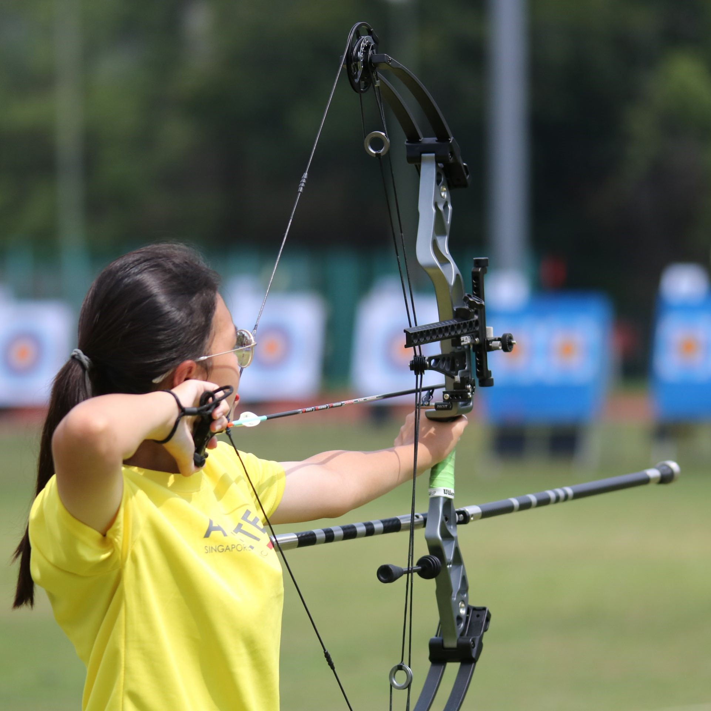
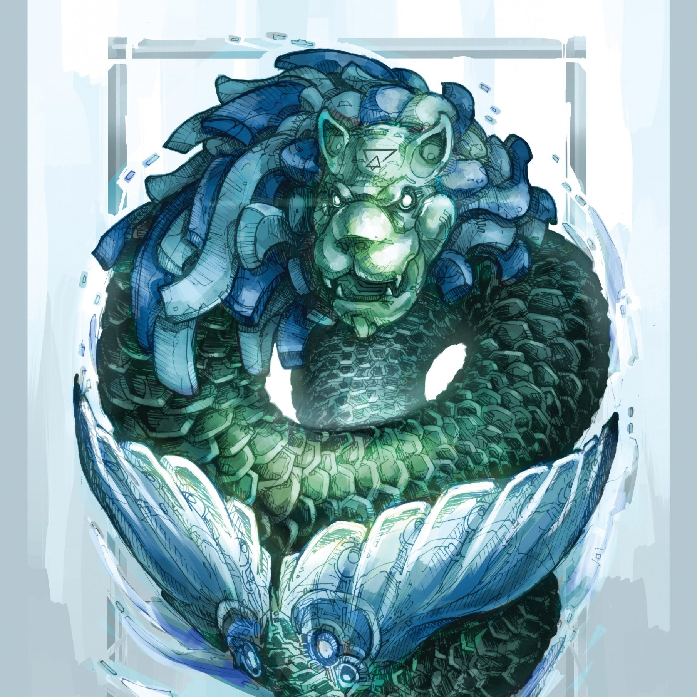

Archery
Archery is the art, sport, practice, or skill of using a bow to shoot arrows.
Check out their instagram

Life Arts
Life Arts consists of two divisions - plastic modelling and illustration.
Check out their instagram